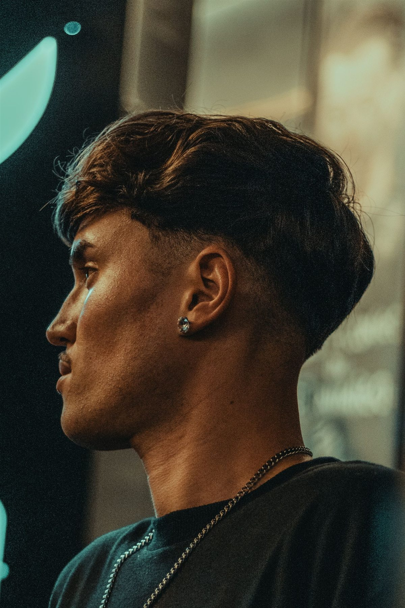

01 / 05 · Contorno
Taper fade
Rebaja la longitud solo en el contorno: patillas y nuca. El resto de los lados conserva volumen, así que el corte crece sin perder la forma.
- Dónde empieza
- En el borde natural del cabello, patillas y nuca
- Graduación
- Guía 0,5 a 2 en el contorno; los lados, a tijera o guía alta
- Arriba
- Libre: rizos, textura o flequillo
- Ideal para
- Verse arreglado sin un contraste fuerte
- Retoque
- Cada 3 a 4 semanas